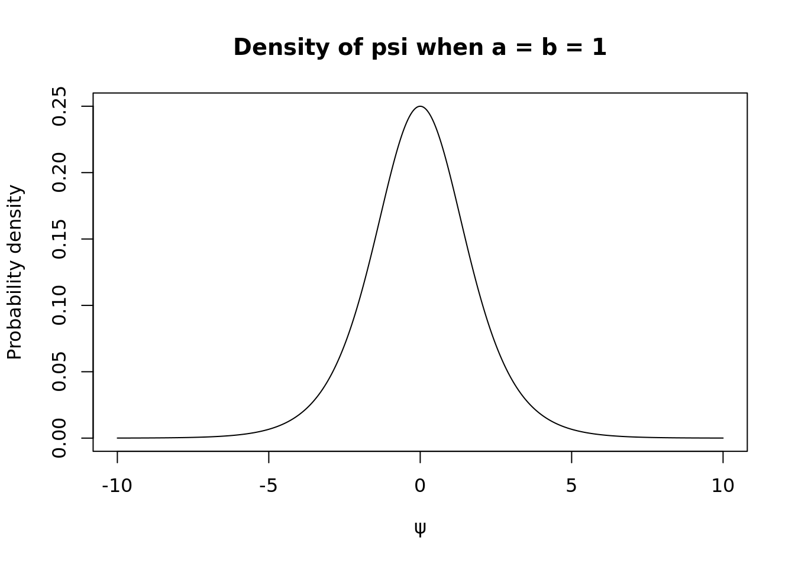
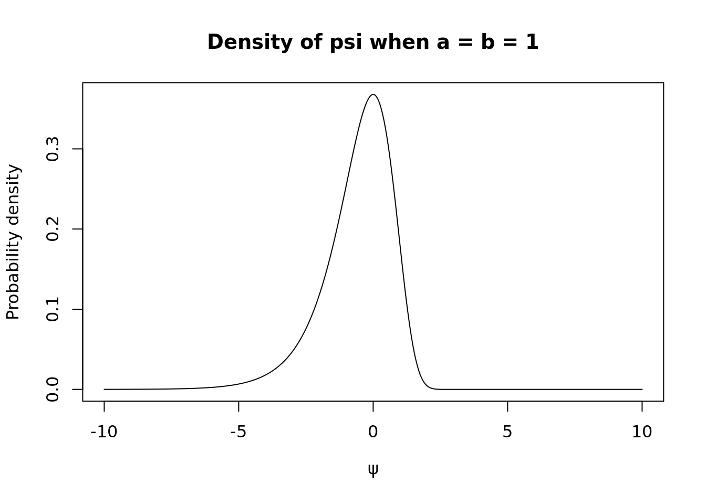
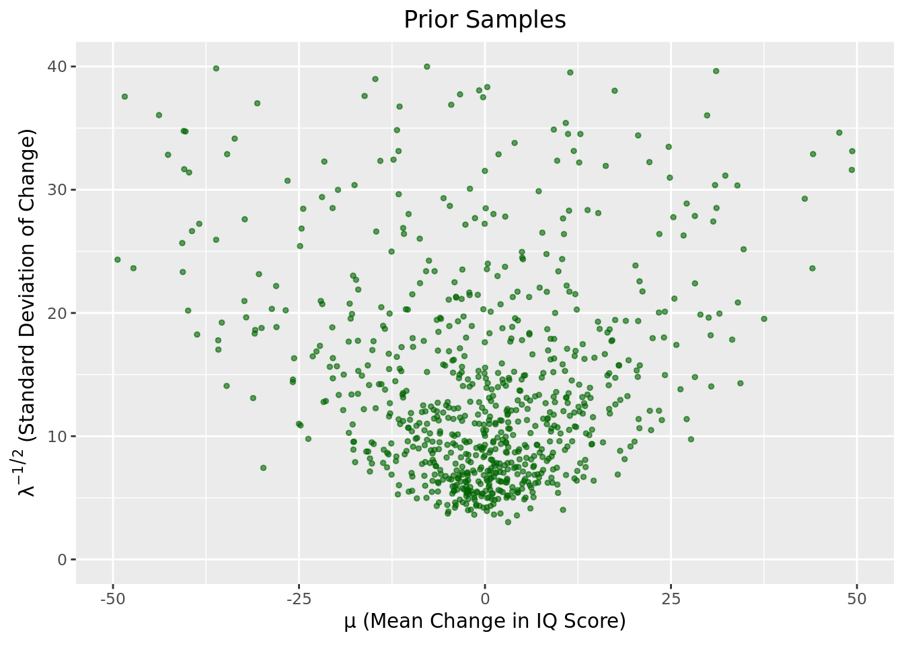

The following objects are masked from 'package:plyr':
arrange, count, desc, failwith, id, mutate, rename, summarise,
summarize
The following objects are masked from 'package:stats':
filter, lag
The following objects are masked from 'package:base':
intersect, setdiff, setequal, union
library(xtable)library(reshape)
Attaching package: 'reshape'
The following object is masked from 'package:dplyr':
rename
The following objects are masked from 'package:plyr':
rename, round_any
# set seedset.seed(123)
Question 1
Part A
Let\(\theta \sim \text{beta}(a,b)\)and let\(\psi = \log[\theta/(1- \theta)].\)Obtain the form of\(p_{\psi}\)and plot\(p_{\psi}\)for the case that\(a=b=1.\)
Let \(\psi= g(\theta),\) where \(g\) is a monotone function of \(\theta,\) and \(h\) be the inverse of \(g\) so that \(\theta = h(\psi)\). Since \(\theta \sim \text{beta}(a,b)\), we have that the probability density of \(\theta,\)\(p_{\theta}(\theta),\) is given by
Since \(h\) is the inverse of \(g(\theta) = \psi\) and \(\psi = \log[\frac{\theta}{1-\theta}]\), it follows that \(h(\psi) = \theta = \frac{e^\psi}{e^\psi + 1}.\) Observe
### Plot prob density for psi when a = b = 1 #### Create a grid over the support of psipsi_vals <-seq(-10, 10, length.out =1000)# Compute the density valuesprob_values <-exp(psi_vals) / (exp(psi_vals) +1)^2# Create the plotplot(psi_vals, prob_values, type ="l", xlab =expression(psi),ylab ="Probability density", main ="Density of psi when a = b = 1")

Part B
Let \(\theta \sim \text{gamma}(a = shape,b = rate)\) and let \(\psi = \log(\theta).\) Obtain the form of \(p_{\psi}\) and plot \(p_{\psi}\) for the case that \(a=b=1.\)
Now, since \(\theta \sim \text{gamma}(a = shape,b = rate)\), we have
### Plot prob density for psi when a = b = 1 #### Create a grid over the support of psipsi_vals_new <-seq(-10, 10, length.out =1000)# Compute the density valuesprob_values_new <-exp(psi_vals-exp(psi_vals)) # Create the plotplot(psi_vals_new, prob_values_new, type ="l", xlab =expression(psi),ylab ="Probability density", main ="Density of psi when a = b = 1")

Question 2
Now, we can answer our original question: “What is the posterior probability that\(\mu_S>\mu_C\)?’’
The easiest way to do this is to take a bunch of samples from each of the posteriors, and see what fraction of times we have\(\mu_S>\mu_C\). This is an example of a Monte Carlo approximation (much more to come on this in the future).
To do this, we draw\(N=10^6\)samples from each posterior:
Interpret the posterior probability that you compute above.
Lab Task 4
## don't use data in package, use data on lab assignment ## input data# spurtersx =c(18, 40, 15, 17, 20, 44, 38)# control groupy =c(-4, 0, -19, 24, 19, 10, 5, 10,29, 13, -9, -8, 20, -1, 12, 21,-7, 14, 13, 20, 11, 16, 15, 27,23, 36, -33, 34, 13, 11, -19, 21,6, 25, 30,22, -28, 15, 26, -1, -2,43, 23, 22, 25, 16, 10, 29)# store data in data frame iqData =data.frame(Treatment =c(rep("Spurters", length(x)), rep("Controls", length(y))),Gain =c(x, y))xLimits =seq(min(iqData$Gain) - (min(iqData$Gain) %%5),max(iqData$Gain) + (max(iqData$Gain) %%5),by =5)prior =data.frame(m =0, c =1, a =0.5, b =50)findParam =function(prior, data){ postParam =NULL c = prior$c m = prior$m a = prior$a b = prior$b n =length(data) postParam =data.frame(m = (c*m + n*mean(data))/(c + n), c = c + n, a = a + n/2, b = b +0.5*(sum((data -mean(data))^2)) + (n*c *(mean(data)- m)^2)/(2*(c+n)))return(postParam)}postS =findParam(prior, x)postC =findParam(prior, y)# sampling from two posteriors # Number of posterior simulationssim =1000000# initialize vectors to store samplesmus =NULLlambdas =NULLmuc =NULLlambdac =NULL# Following formula from the NormalGamma with # the update paramaters accounted accounted for below lambdas =rgamma(sim, shape = postS$a, rate = postS$b)lambdac =rgamma(sim, shape = postC$a, rate = postC$b)mus =sapply(sqrt(1/(postS$c*lambdas)),rnorm, n =1, mean = postS$m)muc =sapply(sqrt(1/(postC$c*lambdac)),rnorm, n =1, mean = postC$m)# task 4mean(mus>muc) # check if this is right
[1] 0.970673
The posterior probability that the true mean change in IQ score is greater in the spurters group versus the control group is 0.971, meaning that there is a 97.1% chance that the mean change in IQ score is greater in the spurters group versus the control group, given the observed data and chosen prior distributions, based on this approximation of the proportion of posterior draws for which \(\mu_S >\mu_C\).
Lab Task 5
Let’s return back to the prior assumptions. There are a few ways that you can check that the prior conforms with our prior beliefs. Let’s go back and checks these. Draw some samples from the prior and look at them—this is probably the best general strategy. See Figure. It’s also a good idea to look at sample hypothetical datasets\(X_{1:n}\)drawn using these sampled parameter values.
Please replicate a plot similar to Figure\(\ref{figure:pygmalion-prior}\)and report your findings.
# Number of posterior simulationssim =1000# Following formula from the NormalGamma with # the update paramaters accounted accounted for below # Sample prior precisionslambda_prior <-rgamma(sim, shape = prior$a,rate = prior$b)# Sample prior means conditional on precisionmu_prior <-rnorm(sim, mean = prior$m, sd =sqrt(1/ (prior$c * lambda_prior)))# Convert precision to standard deviationsd_prior <- lambda_prior^(-0.5)# Store simulationssimDF_prior <-data.frame(mu = mu_prior, sd = sd_prior)# Plot prior samplesggplot(simDF_prior, aes(x = mu, y = sd)) +geom_point(color ="darkgreen", alpha =0.6, size =1) +labs(x =expression(mu~"(Mean Change in IQ Score)"),y =expression(lambda^{-1/2}~"(Standard Deviation of Change)")) +ggtitle("Prior Samples") +theme(plot.title =element_text(hjust =0.5)) +xlim(-50, 50) +ylim(0, 40)
Warning: Removed 212 rows containing missing values or values outside the scale range
(`geom_point()`).

# I simplified my code using AI
Based on the samples drawn form the scatterplot, we observe that the choice of prior conforms with our prior beliefs. We expect there to be no change in IQ score (i.e., mean is 0) based on our prior beliefs because we do not have any expert information suggesting a change in IQ score. Therefore, we expect most points to be clustered near \(\mu = 0\), and we expect relatively large standard devaition to reflect undertainty about individual variation.
Note: I set limits on the axes to match the sample plot…we may draw samples outside these limits. Here is the same plot without limits below.
# Plot prior samplesggplot(simDF_prior, aes(x = mu, y = sd)) +geom_point(color ="darkgreen", alpha =0.6, size =1) +labs(x =expression(mu~"(Mean Change in IQ Score)"),y =expression(lambda^{-1/2}~"(Standard Deviation of Change)")) +ggtitle("Prior Samples") +theme(plot.title =element_text(hjust =0.5))